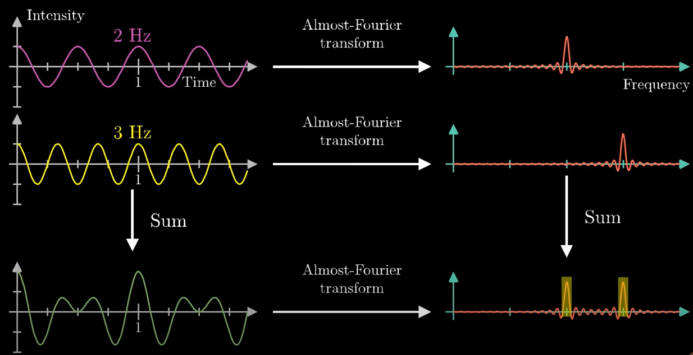
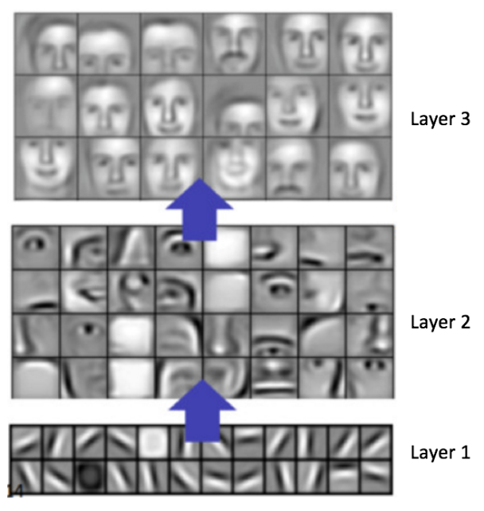
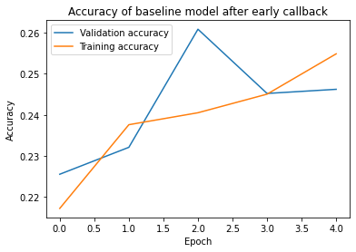
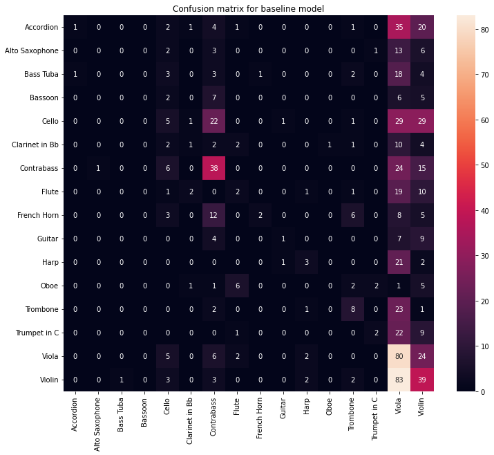

!which python/home/shiya/anaconda3/envs/music/bin/pythonimport glob
import os
import random
import librosa
import librosa.display
import matplotlib.pyplot as plt
import numpy as np
import pandas as pd
import scipy.stats
import seaborn as sns
import tensorflow as tf
from sklearn.metrics import classification_report
from sklearn.model_selection import train_test_split
from tensorflow.keras import datasets, layers, models
from spec_generator_sequence import spec_generator
from spectrogram_class import spectrogramThis is a successive notebook after the EDA notebooks.
After the EDA analysis, we can proceed to perform the preprocessing for audio. We will be working will spectrogram, as a spectrogram contains the spatial and temporal information of a audio files.
We will be utilizing Librosa package for spectrogram generation and augmentation. For easier implementation, we have defined a spectrogram class to perform all the procedures. Please refer to spectrogram_class.py in the same folder for more information.
Let’s have a look at what a spectrogram looks like
[PhysicalDevice(name='/physical_device:GPU:0', device_type='GPU')]2022-08-08 01:38:04.723562: I tensorflow/stream_executor/cuda/cuda_gpu_executor.cc:975] successful NUMA node read from SysFS had negative value (-1), but there must be at least one NUMA node, so returning NUMA node zero
2022-08-08 01:38:04.752704: I tensorflow/stream_executor/cuda/cuda_gpu_executor.cc:975] successful NUMA node read from SysFS had negative value (-1), but there must be at least one NUMA node, so returning NUMA node zero
2022-08-08 01:38:04.753369: I tensorflow/stream_executor/cuda/cuda_gpu_executor.cc:975] successful NUMA node read from SysFS had negative value (-1), but there must be at least one NUMA node, so returning NUMA node zeroWe have randomly picked a audio file in OrchideaSOL to showcase the spectrogram.
%%time
test_spec = spectrogram('PluckedStrings/Harp/pizzicato_bartok/Hp-pizz_bartok-G3-ff-N-N.wav', preprocess = False,
trunc_off = True)
# To demonstrate that the test_spec is an instance on our custom defined class
# let's check its type!
type(test_spec)CPU times: user 47.1 ms, sys: 76.8 ms, total: 124 ms
Wall time: 302 msspectrogram_class.spectrogramWe have a support function in the class to help us visualized the spectrogram, now let’s have a look at what a harps looks like in spectrogram
Now I owe you some explanation, why am I showing you this? There are some important points to observe:
You probably heard about the relation between a note and its soundwave frequency, for example, in piano the middle G3 note corresponds to 196 HZ. But we are not exactly seeing one horizontal line on 196 HZ. Why is that? The main reason is that the magnitude of sound wave/magnitude is additive! Let’s have a closer look:

(screenshot captured from our lord and savior, 3Blue1Brown.
Althought the resulting soundwave is of frequency of 196 HZ, it is actually a combination of soundwave of different frequencies. This is exactly the same note for piano and violin sounds different! Imagine a world where a tuba, harp, tuna and your cat sound the same, what a horrible world…
This is actually why throughout the project, we have decided to use neural network to perform the music transcription, a convolutional network or RNN are able to capture the feature between spatial and temporal information across the spectrogram.

(A demonstration of how a CNN is able to capture different features on a face in different layers.)
But before we can use the dataset into directly, we have to consider about the data augmentation. Our model should be able to perform tasks include:
But how can our model learn these difference if our data is perfectly clean, and only contain audio files from the same instruments. That is where data augmentation comes in.
We have to augmentate our data so that our training dataset match the scenario above. To achieve this, we have decided to add noise, masking and shifting to the spectrogram.
All of these function had been defined under the spectrogram class. Now let’s try to visualize this.
Remeber this is how our signal and spectrogram for harps looks like:
The figure on the left is the signal directly converted from raw audio file, which represents the magnitude/pressure of the recorded audio. Whereas the figure on the right is the corresponding converted spectrogram.
We will then add random noise to the signal, before converting to the spectrogram, the signal is added based on the normal distribution of the maximum value of the signal.
Now there is some fuzziness going on in the signal! However, since the magnitude of the mel spectrogram is log scaled, it isn’t obvious in the right figure.
Note that the in practice, we don’t add so much fuzziness in our training, the increased noise factor is for demonstration purpose only.
Another technique we used is the spectrogram masking, the masking function will randomly set the magnitude of spectrogram into 0, across the time and frequency of the spectrogram.
Note how we have remove chunks of the frequency and time dimension of the spectrogram. If it’s not, run a few more time, it’s random anyway.
Since in our audio files, the recording always starts at the beginning, and there is always a few seconds of silence before the recording ends, we will need to shift the spectrogram, so that the machine learning models doesn’t depends too much on the beginning of the time slices.
Note the now the spectrogram is now shift to the right of time, we have set the maximum time it can shift for 5 seconds for demonstration purpose.
Since we have audio files of different length, we will need to preprocess it in a way that all of the sample have the same dimension as a numpy array. To do this we will simply be padding the numpy array as zeros, or trimming the last few seconds of the recording. The truncation is applied by default when the spectrogram class initialization is called.
Now to get the size of our input (to be fed into the model), we wil simply run a sample, and acquire the shape from the numpy array.
%%time
sample = spectrogram('PluckedStrings/Harp/pizzicato_bartok/Hp-pizz_bartok-G3-ff-N-N.wav',
hop_length = hop_length, n_mels = 512,
n_fft = n_fft)CPU times: user 143 ms, sys: 80 ms, total: 223 ms
Wall time: 325 msNow that we have the spectrogram ready for out training, we can use the instrument and pitch data in the metadata dataframe.
| Path | Family (abbr.) | Family (in full) | Instrument (abbr.) | Instrument (in full) | Technique (abbr.) | Technique (in full) | Pitch | Pitch ID (if applicable) | Dynamics | Dynamics ID (if applicable) | Instance ID | Mute (abbr.) | Mute (in full) | String ID (if applicable) | Needed digital retuning | Fold | |
|---|---|---|---|---|---|---|---|---|---|---|---|---|---|---|---|---|---|
| 0 | Brass/Bass_Tuba+sordina/ordinario/BTb+S-ord-A#... | Brass | Brass | BTb | Bass Tuba | ord | ordinario | A#0 | 22.0 | f | 3.0 | 0.0 | S | Sordina | NaN | False | 2 |
| 1 | Brass/Bass_Tuba+sordina/ordinario/BTb+S-ord-A#... | Brass | Brass | BTb | Bass Tuba | ord | ordinario | A#0 | 22.0 | p | 1.0 | 0.0 | S | Sordina | NaN | True | 0 |
| 2 | Brass/Bass_Tuba+sordina/ordinario/BTb+S-ord-A#... | Brass | Brass | BTb | Bass Tuba | ord | ordinario | A#1 | 34.0 | f | 3.0 | 0.0 | S | Sordina | NaN | True | 1 |
| 3 | Brass/Bass_Tuba+sordina/ordinario/BTb+S-ord-A#... | Brass | Brass | BTb | Bass Tuba | ord | ordinario | A#1 | 34.0 | p | 1.0 | 0.0 | S | Sordina | NaN | True | 2 |
| 4 | Brass/Bass_Tuba+sordina/ordinario/BTb+S-ord-A#... | Brass | Brass | BTb | Bass Tuba | ord | ordinario | A#2 | 46.0 | f | 3.0 | 0.0 | S | Sordina | NaN | True | 1 |
<class 'pandas.core.frame.DataFrame'>
RangeIndex: 13265 entries, 0 to 13264
Data columns (total 17 columns):
# Column Non-Null Count Dtype
--- ------ -------------- -----
0 Path 13265 non-null object
1 Family (abbr.) 13265 non-null object
2 Family (in full) 13265 non-null object
3 Instrument (abbr.) 13265 non-null object
4 Instrument (in full) 13265 non-null object
5 Technique (abbr.) 13265 non-null object
6 Technique (in full) 13265 non-null object
7 Pitch 13265 non-null object
8 Pitch ID (if applicable) 13162 non-null float64
9 Dynamics 13265 non-null object
10 Dynamics ID (if applicable) 12646 non-null float64
11 Instance ID 13262 non-null float64
12 Mute (abbr.) 13265 non-null object
13 Mute (in full) 13265 non-null object
14 String ID (if applicable) 7516 non-null float64
15 Needed digital retuning 13265 non-null bool
16 Fold 13265 non-null int64
dtypes: bool(1), float64(4), int64(1), object(11)
memory usage: 1.6+ MB| Pitch ID (if applicable) | Dynamics ID (if applicable) | Instance ID | String ID (if applicable) | Fold | |
|---|---|---|---|---|---|
| count | 13162.000000 | 12646.000000 | 13262.000000 | 7516.000000 | 13265.000000 |
| mean | 63.842653 | 2.073857 | 0.848138 | 2.360298 | 2.000000 |
| std | 16.512067 | 1.329919 | 1.177874 | 1.196041 | 1.414267 |
| min | 20.000000 | 0.000000 | 0.000000 | 1.000000 | 0.000000 |
| 25% | 52.000000 | 2.000000 | 0.000000 | 1.000000 | 1.000000 |
| 50% | 64.000000 | 2.000000 | 0.000000 | 2.000000 | 2.000000 |
| 75% | 76.000000 | 3.000000 | 2.000000 | 3.000000 | 3.000000 |
| max | 109.000000 | 4.000000 | 12.000000 | 6.000000 | 4.000000 |
Path 0
Family (abbr.) 0
Family (in full) 0
Instrument (abbr.) 0
Instrument (in full) 0
Technique (abbr.) 0
Technique (in full) 0
Pitch 0
Pitch ID (if applicable) 103
Dynamics 0
Dynamics ID (if applicable) 619
Instance ID 3
Mute (abbr.) 0
Mute (in full) 0
String ID (if applicable) 5749
Needed digital retuning 0
Fold 0
dtype: int64Violin 1987
Viola 1952
Contrabass 1636
Cello 1593
Accordion 872
Trombone 670
Trumpet in C 590
French Horn 589
Flute 529
Harp 507
Bass Tuba 500
Clarinet in Bb 406
Alto Saxophone 377
Bassoon 358
Guitar 353
Oboe 346
Name: Instrument (in full), dtype: int64We don’really care about the pitchID, Dynamics Id and String ID.
We can see some degree of bias in the instrument classes.
print('The number of rows for the training data is ', train_df.shape[0])
print('The number of rows for the test data is ', test_df.shape[0])The number of rows for the training data is 9285
The number of rows for the test data is 3980BATCH_SIZE = 32
train_generator = tf.data.Dataset.from_generator(lambda: spec_generator(train_df, BATCH_SIZE,
add_channel = True, live_generation = True),
output_types=(tf.float32, tf.int32),
output_shapes = ((BATCH_SIZE, spec_shape[0], spec_shape[1], 1),
(BATCH_SIZE, 16))).prefetch(5)
eval_generator = tf.data.Dataset.from_generator(lambda: spec_generator(test_df, BATCH_SIZE,
add_channel = True, live_generation = True,),
output_types=(tf.float32, tf.int32),
output_shapes = ((BATCH_SIZE, spec_shape[0], spec_shape[1], 1),
(BATCH_SIZE, 16))).prefetch(5)2022-08-08 01:38:09.491735: I tensorflow/core/platform/cpu_feature_guard.cc:193] This TensorFlow binary is optimized with oneAPI Deep Neural Network Library (oneDNN) to use the following CPU instructions in performance-critical operations: AVX2 FMA
To enable them in other operations, rebuild TensorFlow with the appropriate compiler flags.
2022-08-08 01:38:09.493556: I tensorflow/stream_executor/cuda/cuda_gpu_executor.cc:975] successful NUMA node read from SysFS had negative value (-1), but there must be at least one NUMA node, so returning NUMA node zero
2022-08-08 01:38:09.494346: I tensorflow/stream_executor/cuda/cuda_gpu_executor.cc:975] successful NUMA node read from SysFS had negative value (-1), but there must be at least one NUMA node, so returning NUMA node zero
2022-08-08 01:38:09.495138: I tensorflow/stream_executor/cuda/cuda_gpu_executor.cc:975] successful NUMA node read from SysFS had negative value (-1), but there must be at least one NUMA node, so returning NUMA node zero
2022-08-08 01:38:10.299483: I tensorflow/stream_executor/cuda/cuda_gpu_executor.cc:975] successful NUMA node read from SysFS had negative value (-1), but there must be at least one NUMA node, so returning NUMA node zero
2022-08-08 01:38:10.299828: I tensorflow/stream_executor/cuda/cuda_gpu_executor.cc:975] successful NUMA node read from SysFS had negative value (-1), but there must be at least one NUMA node, so returning NUMA node zero
2022-08-08 01:38:10.300078: I tensorflow/stream_executor/cuda/cuda_gpu_executor.cc:975] successful NUMA node read from SysFS had negative value (-1), but there must be at least one NUMA node, so returning NUMA node zero
2022-08-08 01:38:10.300294: I tensorflow/core/common_runtime/gpu/gpu_device.cc:1532] Created device /job:localhost/replica:0/task:0/device:GPU:0 with 3370 MB memory: -> device: 0, name: NVIDIA GeForce GTX 1050, pci bus id: 0000:01:00.0, compute capability: 6.1<PrefetchDataset element_spec=(TensorSpec(shape=(32, 512, 500, 1), dtype=tf.float32, name=None), TensorSpec(shape=(32, 16), dtype=tf.int32, name=None))>model = models.Sequential()
model.add(layers.InputLayer((spec_shape[0], spec_shape[1], 1), batch_size = BATCH_SIZE,
dtype = tf.float32))
model.add(layers.Conv2D(15, (15, 200), strides=(10, 10), activation='relu'))
# , input_shape = (spec_shape[0], spec_shape[1], 1)))
model.add(layers.MaxPool2D((5, 2)))
model.add(layers.Flatten())
model.add(layers.Dense(16, activation = 'sigmoid'))
model.build()model.compile(optimizer=tf.keras.optimizers.Adam(learning_rate=0.0005),
loss=tf.keras.losses.BinaryCrossentropy(),
metrics=['accuracy'])
print(model.metrics)[]Model: "sequential"
_________________________________________________________________
Layer (type) Output Shape Param #
=================================================================
conv2d (Conv2D) (32, 50, 31, 15) 45015
max_pooling2d (MaxPooling2D (32, 10, 15, 15) 0
)
flatten (Flatten) (32, 2250) 0
dense (Dense) (32, 16) 36016
=================================================================
Total params: 81,031
Trainable params: 81,031
Non-trainable params: 0
_________________________________________________________________| Path | Family (abbr.) | Family (in full) | Instrument (abbr.) | Instrument (in full) | Technique (abbr.) | Technique (in full) | Pitch | Pitch ID (if applicable) | Dynamics | Dynamics ID (if applicable) | Instance ID | Mute (abbr.) | Mute (in full) | String ID (if applicable) | Needed digital retuning | Fold | |
|---|---|---|---|---|---|---|---|---|---|---|---|---|---|---|---|---|---|
| 4851 | Strings/Contrabass/pizzicato_bartok/Cb-pizz_ba... | Strings | Violin Family | Cb | Contrabass | pizz_bartok | pizzicato_bartok | F3 | 53.0 | ff | 4.0 | 0.0 | N | None | 1.0 | False | 1 |
| 12565 | Winds/Oboe+sordina/ordinario/Ob+S-ord-E6-mf-N-... | Winds | Woodwinds | Ob | Oboe | ord | ordinario | E6 | 88.0 | mf | 2.0 | 0.0 | S | Sordina | NaN | False | 4 |
# ckpt_callback = tf.keras.callbacks.ModelCheckpoint(
# f"../models/baseline_checkpoint/{datetime.now().strftime('%Y%m%d_%H%M%S')}_{{epoch:02d}}_model",
# monitor='val_accuracy')
# early_callback = tf.keras.callbacks.EarlyStopping(monitor = 'val_accuracy', patience = 2,
# restore_best_weights = True)
# log_dir = "logs/fit/" + datetime.now().strftime("%Y%m%d-%H%M%S")
# tensorboard_callback = tf.keras.callbacks.TensorBoard(log_dir=log_dir, histogram_freq=1)
# history = model.fit(train_generator, epochs = 10, verbose=1,
# validation_data = eval_generator,
# validation_freq= 1,
# # use_multiprocessing=True, workers = 2,
# callbacks=[ckpt_callback, early_callback, tensorboard_callback])Now that we have an working model, we need to save the model and the history object, we have defined a short checkpoint callback to save the model automatically, now let’s define a function to save the history.
It’s time to check if our model is good! drum rolling
plt.plot(history['val_accuracy'], label = 'Validation accuracy')
plt.plot(history['accuracy'], label = 'Training accuracy')
plt.title('Accuracy of baseline model after early callback')
plt.xlabel('Epoch')
plt.ylabel('Accuracy')
plt.legend()
plt.show()
The figure above shows the both the training and testing accuracy for our instrument classification. We can see that the testing accuracy starts to decrease after 2 epoch, and only peaks at 26% accuracy.
Our current options are to apply dropout layer or regularizer for out current layers. However, due to the time constrant, we have decided to apply these technique on more complicated models, as this baseline model should only be serving the purpose of quick gauge of how well CNN can perform on out dataset.
This indicate the limitation of our fairly simple baseline model. To get an idea of how the classification if performed over class, let’s have a look at the prediction across all classes.
Now we are interested in the confusion matrix to represents the prediction for each class, due to gpu memory limitation, we will only be taking the snapshot of the test data as the classification report.
['Accordion',
'Alto Saxophone',
'Bass Tuba',
'Bassoon',
'Cello',
'Clarinet in Bb',
'Contrabass',
'Flute',
'French Horn',
'Guitar',
'Harp',
'Oboe',
'Trombone',
'Trumpet in C',
'Viola',
'Violin']def orchidea_confusion_matrix(model, generator, instrument_list):
'''
Plot confusion matrix for OrchideaSOL dataset
Input:
model: Model to be used
generator: Sequence class, generator to generate feature and labels for
OrchideaSOL dataset
instrument_list: list of instrument in alphabetical order, used to label the plot
Output:
predict: np.array, Predicted output
prediction_label: np.array, True label
'''
prediction_feature, prediction_label = generator.__getitem__(0)
predict = predict = model.predict(prediction_feature)
assert prediction_label.shape == predict.shape
from sklearn.metrics import confusion_matrix
plt.figure(figsize = (12, 10))
sns.heatmap(confusion_matrix(np.argmax(prediction_label, axis=1),
np.argmax(predict, axis = 1)), annot = True,
xticklabels=instrument_list,
yticklabels=instrument_list)
plt.title('Confusion matrix for baseline model')
plt.show()
return predict, prediction_label25/25 [==============================] - 1s 23ms/step
According to our baseline model, everything is a violin or viola, with the exception of good prediction on controbass. We will need to adjsut our loss function by assinging weighted entropy, or by creating more data for other classes using data augmentation.
However, the last option is unfavourable, since it will increase the training time per epochs.
precision recall f1-score support
0 0.50 0.02 0.03 65
1 0.00 0.00 0.00 25
2 0.00 0.00 0.00 32
3 0.00 0.00 0.00 20
4 0.15 0.06 0.08 88
5 0.17 0.04 0.07 23
6 0.36 0.45 0.40 84
7 0.14 0.06 0.08 36
8 0.67 0.06 0.10 36
9 0.33 0.05 0.08 21
10 0.33 0.11 0.17 27
11 0.00 0.00 0.00 18
12 0.33 0.23 0.27 35
13 0.40 0.06 0.10 34
14 0.20 0.67 0.31 119
15 0.21 0.29 0.24 133
accuracy 0.23 796
macro avg 0.24 0.13 0.12 796
weighted avg 0.25 0.23 0.17 796
The precisio nnad recall is bad all across the board, with the exception of 67% recall on instrument 14 (viola)